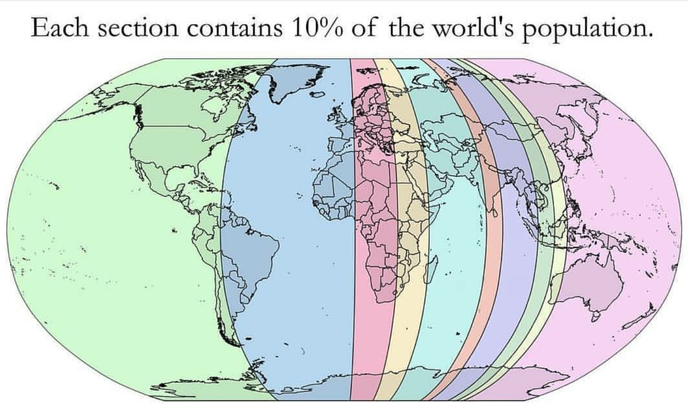
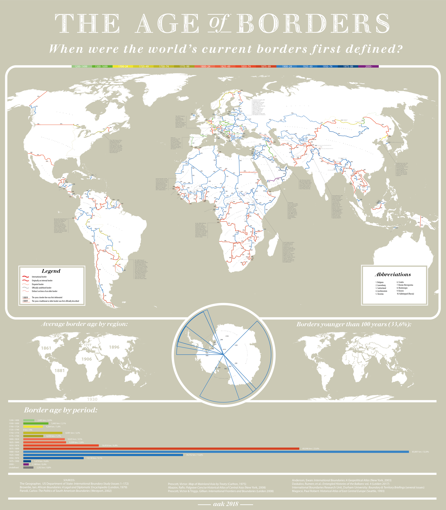

What differentiates a great visualization from a poor visualization?
In Alberto Cairo's book, The Truthful Art, he defines the five qualities of a great visualization:
- It is truthful, as it's based on thorough and honest research.
- It is functional, as it constitutes an accurate depiction of the data, and it's built in a way that lets people dpo meaningful operations based on it.
- It is beautiful, in the sense of being attractive, intriguing, and even aesthetically pleasing for its intended audience.
- It is insightful, as it reveals evidence that we would have a hard time seeing otherwise.
- It is enlightening because if we grasp and accept the evidence it depicts, it will change our minds for the better.
To illustrate how these qualities determine what is and isn't a great visualization, we will now take a look at a poor visualization, followed by a great visualization.
A Poor Visualization

Is this the worst visualization you can find on the internet? No, not even close. But I chose this one because, while being a poor visualization, it seems to be an insightful one at first glance. So why is it bad? Let's walk through Cairo's steps.
- Is it truthful? Maybe, though how can I verify this? No statistics or further evidence exists. I simply have to take the image at face value. Cairo mentions "thorough and honest research" in this criterion, though it does not seem like any was done. It seems that the creator simply started from the left side of the map and started counting.
- Is it functional? Cairo has two sub-points to this criterion. Is it an accurate depiction of the data? Well, technically yes, the data is probably what it claims to be. However, it suffers from ambiguity. For example, the smallest (and hence most densly populated) strip includes Siberia, a sparsely populated area. It is likely small due to containing Beijing and other densely populated Chinese cities, but that says nothing about the other areas of the strip. For example, Indonesia appears on the strip as well. Does that contribute to the strip being so small? We don't know. Secondly, does it let people do meaningful operations based on it? Not really. Its lack of actual data prevents any meaninful interaction from taking place, making it simply a novelty.
- Is it beautiful? Obviously, this is subjective, but my reaction is "no." The colors that highlight the map don't seem to blend well together. There are no good places on the map to focus my vision. If I look at one strip, I feel like I have to look at the rest of the strip to avoid ambiguity. All in all, it's not fun to look at.
- Is it insightful? Here I will relent and say yes, it is insightful. Most of us know how densely populated certain regions are, but this map helps put it into context.
- Is it enlightening? Recall Cairo's definition that grasping the evidence will "change our minds for the better." Is there any way to better our lives after viewing this visualization? No. As was said before, it's just a novelty.
1/5. That's a 20%, a big fat F. What about a great visualization instead?
A Great Visualization

That's a lot to take in. I recommend using your browser's zoom tools to read some of the info. Or, view it in a separate tab for easier zooming.
Alright, let's analyze it by the same criteria.
- Is it truthful? Certainly. It contains relevant dates and info, and even cites its sources at the bottom. A clear upgrade from the previous.
- Is it functional? Definitely. Consider all of the operations a person can do with this data. They may examine each continent individually, comparing border ages and reading the fascinating captions. They can view the graph at the bottom to see which years are the most common for the dates of the establishment of modern borders. One can even use the sources to find more interesting information about the topic.
- Is it beautiful? Again, this is a subjective question, but my opinion is "yes." The colors work well together. Nothing is overly crowded, and there is plenty of space to examine each border. Even the font lines up with the theme of the visualization. It immediately catches the eye with a "cartography" feel and entertains it as it examines all of the data.
- Is it insightful? Of course. Most of us have no idea just how young our modern borders are. We tend to view borders as fixed and unquestionable, a bias that comes from modernity. The fact that the most active time period for drawing modern borders is 1900-1924, a time period that ends less than a century ago, is insightful.
- Is it enlightening? Maybe not as much as other notable visualizations. But it has filled me with an appreciation for the "youngness" of the modern world, and the realization that history is constantly changing (a fact that is important to hold).
Wow, 5/5. That's a 100%, an A++. See the difference?
Thanks to Color Hunt for letting me use this palette. The poor visualization comes from here and the great visualization comes from here.
{kind=link}